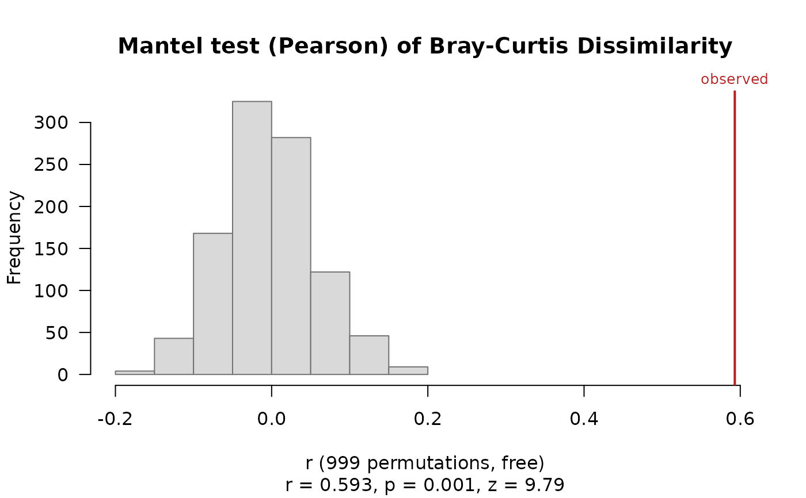

Tests whether two distance matrices are correlated: for instance, whether
samples with more different communities are also further apart, or more
different in pH. Gives the same statistic as vegan::mantel() (Pearson,
Spearman, or Kendall correlation), with permutation p-values. Computes
them in parallel C, straight from the distances, without the
\(n \times n\) matrices that mantel() builds for every permutation.
mantel_partial() removes the effect of a third distance matrix.
Usage
mantel(
dm,
y,
data = NULL,
method = "pearson",
permutations = 999L,
strata = NULL,
alternative = "greater",
seed = 0L,
cpus = n_cpus()
)Arguments
- dm
A
distobject, such as frombeta_div()orbray(), or a symmetric numeric matrix of distances. Must not containNAs or negative values. Its samples are the ones permuted.- y
The distances to correlate with
dm: adistobject or a symmetric numeric matrix, likedm, matched todm's samples by name when both have names, otherwise in the same order. Or numeric values, such as age or pH, whose absolute differences (asstats::dist(y)) are the distances: withdata, the name of one of its numeric columns or a vector with one value per row ofdata; withoutdata, a vector with one value per sample, matched to the samples by name when it has names, otherwise in the same order.- data
Optional sample metadata: a data frame with one row per sample, whose columns
yandstratacan name. Rows are matched to the samples indmby row name, and rows for other samples are ignored; without row names, they must be in the same order asdm. Default:NULL.- method
The correlation coefficient:
'pearson','spearman', or'kendall'(tau-b), as instats::cor(). Default:'pearson'.- permutations
The number of permutations. Default:
999. Alternatively, a matrix with one permutation of1:nper row, as frompermute::shuffleSet(), to use instead of random ones.- strata
Permute samples only within these groups (blocks), for designs such as repeated measures. With
data, the name of one of its columns, or a vector with one value per row ofdata. Withoutdata, a vector with one value per sample, matched to the samples by name when it has names, otherwise in the same order. Default:NULL(free permutation).- alternative
Which correlations count as more extreme than the observed one:
'greater'(more positive, as invegan::mantel()),'less'(more negative), or'two.sided'(larger in absolute value). Default:'greater'.- seed
An integer seed for the random permutations. The same seed gives the same p-values. Default:
0- cpus
How many parallel processing threads should be used. The default,
n_cpus(), is the CPU cores this R process may use, within any limits set on it. Results are the same for anycpus.
Value
A list of class c('ecodive_mantel', 'ecodive_test'), with:
statistic: The Mantel statistic,c(r = ...): the correlation ofdmandy.vegan::mantel()'sstatistic.p_value: The permutation p-value.z: The standardized effect size,(r - mean(r_perm)) / sd(r_perm).n_perm: The number of permutations.method: The correlation coefficient:'pearson','spearman', or'kendall'.alternative:'greater','less', or'two.sided'.partial:FALSE(it isTRUEfrommantel_partial()).n: The number of samples.permutation: How samples were permuted:'free','within strata', or'supplied matrix'.
Attribute r_perm is a vector of the statistics of the permutations, as
vegan::mantel()'s perm. as.data.frame() gives the main results as
one row.
Details
Method
The Mantel test (Mantel 1967; Legendre & Legendre 2012) correlates the
\(n(n-1)/2\) distances of dm with the matching distances of y. The
distances aren't independent of one another, so the p-value comes from
permutations of the samples: the rows and columns of dm are shuffled
together, y is held fixed, and the correlation is recomputed. The
p-value is the proportion of permutations, counting the observed one,
with a correlation at least as extreme:
\((1 + \#\{r_{perm} \ge r\}) / (1 + permutations)\) for
alternative = 'greater'. As in vegan::mantel(), permuted statistics
within sqrt(.Machine$double.eps) of the observed one count as ties.
Speed and memory
dm and y are centred and scaled once (after ranking them, for
Spearman), so each permuted correlation is one pass over the distances,
reading dm through the permutation: \(O(n^2)\) per permutation, with
no \(n \times n\) matrix. Kendall's tau-b is counted with Knight's (1966)
merge sort, in \(O(n^2 \log n)\) per permutation, where
stats::cor() takes \(O(n^4)\). Permutations run in parallel.
Reproducibility
The permutations come from seed, not from R's random number generator,
so set.seed() has no effect, and each permutation has a random number
stream of its own. P-values are identical from run to run and for any
number of cpus. The random permutations differ from vegan::mantel()'s,
so p-values agree with it only up to sampling error, unless the same
permutations matrix is given to both.
Differences from vegan::mantel()
ymay also be a numeric vector, one value per sample, or the name of a column ofdata.Samples are matched by name between
dm,y,data, andstrata.alternativeadds lower-tail and two-sided tests.There's no
na.rm: distances must not beNA.When there are fewer possible permutations than requested,
vegan::mantel()(viapermute) runs each of them once instead.mantel()always draws random permutations.
References
Knight, W. R. (1966). A computer method for calculating Kendall's tau with ungrouped data. Journal of the American Statistical Association, 61(314), 436-439. doi:10.1080/01621459.1966.10480879
Legendre, P., & Legendre, L. (2012). Numerical Ecology (3rd ed.), section 10.5. Elsevier.
Mantel, N. (1967). The detection of disease clustering and a generalized regression approach. Cancer Research, 27(2), 209-220.
Examples
# 30 samples along a pH gradient, which shifts the first five genera.
set.seed(1)
counts <- matrix(rpois(30 * 20, 5), 30, 20)
rownames(counts) <- paste0('S', 1:30)
ph <- setNames(round(runif(30, 6, 8), 1), rownames(counts))
counts[, 1:5] <- counts[, 1:5] + round(4 * (ph - 6))
dm <- bray(counts)
# Are samples that differ more in pH also more different in
# community composition?
res <- mantel(dm, ph)
res
#> Mantel test (Pearson) of Bray-Curtis Dissimilarity
#>
#> r = 0.593, p = 0.001, z = 9.786
#> Permutations: 999 (free)
#>
#> Correlation: Pearson's product-moment correlation
#> Alternative: greater (r is more positive than by chance)
#> Samples: 30
plot(res)

# With rank correlation.
mantel(dm, ph, method = 'spearman')
#> Mantel test (Spearman) of Bray-Curtis Dissimilarity
#>
#> r = 0.5528, p = 0.001, z = 10
#> Permutations: 999 (free)
#>
#> Correlation: Spearman's rank correlation rho
#> Alternative: greater (r is more positive than by chance)
#> Samples: 30
# The same as a column of sample metadata.
meta <- data.frame(row.names = rownames(counts), ph = ph)
mantel(dm, 'ph', data = meta, method = 'spearman')
#> Mantel test (Spearman) of Bray-Curtis Dissimilarity
#>
#> r = 0.5528, p = 0.001, z = 10
#> Permutations: 999 (free)
#>
#> Correlation: Spearman's rank correlation rho
#> Alternative: greater (r is more positive than by chance)
#> Samples: 30
# Two distance matrices.
mantel(dm, dist(counts[, 6:20]))
#> Mantel test (Pearson) of Bray-Curtis Dissimilarity
#>
#> r = 0.4893, p = 0.001, z = 6.502
#> Permutations: 999 (free)
#>
#> Correlation: Pearson's product-moment correlation
#> Alternative: greater (r is more positive than by chance)
#> Samples: 30